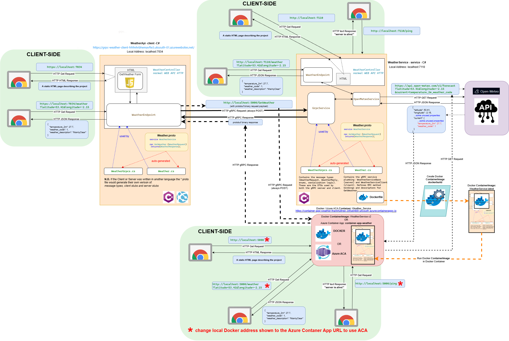

Get the weather via gRPC
This form calls the client's endpoint /weather?latitude=53.41&longitude=-2.15,
which calls the server via gRPC. The server asks Open-Meteo and replies in Protobuf.
Pick a place or enter coordinates, then press Get weather.
The reply includes raw_protobuf: the exact bytes the server sent. It is copied into the decoder below.
Benchmark: gRPC vs REST
The client fetches the same made-up hourly weather forecast from the server over REST (HTTP/1.1 + JSON) and over gRPC (HTTP/2 + Protobuf), and times each call. Each point is one hour of forecast: 12 fields (a time, 10 decimal numbers and a weather code), named like Open-Meteo's hourly forecast, so 10,000 points is about 14 months of hours. One point is about 290 bytes as JSON and 98 bytes as Protobuf. The server holds the data in memory, and both clients parse the reply into typed C# objects, so only the protocol and data format differ.
Three tests
- Size sweep: 1, 100, 1,000 and 10,000 points per reply, 20 timed calls each after 3 untimed warm-up calls, REST and gRPC taking turns.
- Parallel burst: 100 calls at once (1,000 points each), first with new connections, then with the connections reused.
- Streaming: 10,000 points as one JSON document vs a gRPC server stream: how soon the first point arrives.
Why the sizes matter
A tiny reply is almost all network round trip, so REST and gRPC tie (the first version of this benchmark only echoed 3 fields). With thousands of points JSON is about 3× bigger and slower to write and parse, and gRPC pulls ahead.
Settings
Change these in the address bar, i.e. /weatherbenchmark?sizes=1000,10000,50000&iterations=10. The results page explains every setting and why it has that value.
| Setting | Default | What it does |
|---|---|---|
sizes | 1,100,1000,10000 | Forecast points per reply, one results row each (up to 6 sizes, each up to 50,000) |
iterations | 20 | Timed calls per protocol for each size |
warmup | 3 | Untimed calls first, to open connections and warm up |
parallel | 100 | Calls started at once in the burst test |
parallelSize | 1000 | Points per reply in the burst test |
streamSize | 10000 | Points in the streaming test |
A default run takes about 30 seconds; Big replies takes over a minute.
How gRPC works
A high-performance, open-source Remote Procedure Call framework from Google (grpc.io). An app calls a method on a server on another machine as if it were a local object, which makes it popular for microservices.
- Protocol Buffers (Protobuf): instead of text like JSON, data is sent in a compact binary format, so payloads are smaller and parse faster (protobuf.dev).
- HTTP/2: many calls share one connection (multiplexing), headers are compressed, and both sides can stream.
- Contract first: the API's methods and data types are written in a
.protofile, and the gRPC compiler generates strongly-typed client and server code in many languages.
How this demo works
- The browser calls the client (this C# app) at
/weather. - The client calls the server via gRPC:
WeatherService.GetWeather. - The server calls the free Open-Meteo API (no sign-up or key): forecast?…¤t=temperature_2m,weather_code.
- Open-Meteo returns the current temperature (
temperature_2m) and a WMO weather code (weather_code). - The server replies to the client via gRPC, in Protobuf.
- The client turns the reply into JSON for the browser, with the raw Protobuf bytes alongside.
The proto contract
weather.proto is shared by the client and the server.
It generates the C# code on both sides (or code in any other supported language). It defines:
- Schema version
syntax = "proto3";- Data contract
WeatherRequestandWeatherResponse: the exact fields, types and field numbers sent between client and server. The benchmark addsForecastRequest,ForecastPointandForecastResponse.- Service contract
WeatherServiceand its methods:GetWeathertakes aWeatherRequestand returns aWeatherResponse. The benchmark addsEchoForecastand the streamingStreamForecast.- Wire contract
- The field numbers (
= 1,= 2) and types (double,string) fix the binary format, so it stays compatible across languages and versions.
Protobuf hex decoder
Paste the raw_protobuf value from Get the weather via gRPC to see the binary Protobuf message decoded into a WeatherResponse.
The decoded message will appear here.
Client endpoints
- GET /
- This page
- GET /weather?latitude=…&longitude=…
- The weather, fetched from the server via gRPC
- GET /weatherbenchmark
- Runs the gRPC vs REST benchmark and shows the results
- GET /protos/weather.proto
- The proto contract
About
- Client (this app)
- C# Web API on Azure App Service
- Server
- C# gRPC service in an Azure Container App (for HTTP/2): container-app-weather
- Build and deploy
- Azure DevOps pipelines
Diagram
Click to open full size in a new tab.
